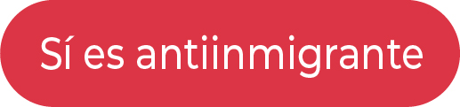
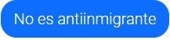

Vas a evaluar mensajes de texto, de usuarios mexicanos, publicados en la plataforma Twitter, para saber si contienen o no, discurso antiinmigrante. El objetivo es construir un modelo de inteligencia artificial para la clasificación automática del discurso antiinmigrante; por lo cual tus respuestas son muy importantes.
Si el mensaje contiene al menos una de las características antes mencionadas, entonces es antiinmigrante, en este caso deberás presionar el botón  (o presionar la tecla a). Si no, no lo es, en este caso deberás presionar el botón (o presionar la tecla n). Existen mensajes ambiguos, en este caso te recomendamos leer nuevamente las instrucciones de anotado ubicadas en la parte inferior o consultar el glosario en caso de tener dudas con algún término.